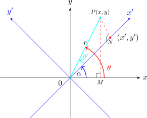
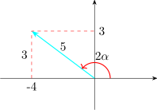

1.8 Rotation of Axes
A general equation of a conic section is given by \[Ax^2 + Bxy + Cy^2 + Dx + Ey + F = 0\] Suppose that two rectangular coordinate system have the same origin and that \(x'-y'\) coordinate system can be obtained by rotating the \(x-y\) axes about the origin in the counter clockwise direction through angle \(\alpha \).

If \(\left |OP\right | = r\) and \(\langle POM = \theta \), then \(x = r\cos \theta \) and \(y = r\sin \theta \).
If \(<PON = \theta '\), then \(x' = r\cos \theta '\) and \(y'= r\sin \theta '\).
But \(\theta = \theta ' + \alpha \). Thus \(x = r\cos (\theta ' + \alpha )\) and \(y = r\sin (\theta ' + \alpha )\).
\begin {align*} x & = r\cos \theta '\cos \alpha -r\sin \theta '\sin \alpha \\ y & = r\sin \theta '\cos \alpha + r \cos \theta '\sin \alpha \\ \end {align*}
\begin {align*} x & = x'\cos \alpha - y'\sin \alpha \\ \implies \hspace {0.4cm} & \hspace {4cm} \cdots \cdots \cdots \hspace {0.2cm} (I)\\ y & = y'\cos \alpha + x'\sin \alpha \end {align*}
Solving \((I)\) simultaneously for \(x'\) and \(y'\) yields \[(II)\hspace {0.5cm}\cdots \cdots \cdots \hspace {0.8cm} \begin {cases} x' & = x\cos \alpha + y\sin \alpha \\ y' & = -x\sin \alpha + y\cos \alpha \end {cases} \]
These are the rotation equations which relate the \(x-y\) system and \(x'-y'\) system.
Rotating the axes through an angle of \(\alpha \), leaves the curve unchanged by changes the equation into \[A'x'^2 + B'x'y' + C'y'^2 + D'y'^2 + E'y' + F' = 0\] The coefficients \(A', B', C', D', E'\) and \(F'\) are related with \(A, B, C, D, E\) and \(F\) are as follows:
\begin {align*} A' & = A\cos ^2\alpha + B\cos \alpha \sin \alpha + C\sin ^2\alpha \\ B' & = B(\cos ^2\alpha - \sin ^2\alpha ) + 2(C-A)\sin \alpha \cos \alpha \\ C' & = A\sin ^2 \alpha - B\sin \alpha \cos \alpha + C\cos ^2\alpha \\ D' & = D\cos \alpha + E\sin \alpha \\ E' & = -D\sin \alpha + E \cos \alpha \\ F' & = F\\ \end {align*}
To remove the \(xy\) term we merely set \(B' =0\). This means that \[B(\cos ^2\alpha - \sin ^2\alpha ) = 2(A-C)\sin \alpha \cos \alpha \]
\[\implies \hspace {0.4cm} \frac {\cos 2\alpha }{\sin 2\alpha } = \frac {A - C}{B}\hspace {0.3cm} \text {if}\hspace {0.3cm} B\neq 0\]
\[\text {or}\hspace {0.3cm} \cot 2\alpha = \dfrac {A - C}{B}\hspace {0.3cm} \text {if}\hspace {0.3cm} B \neq 0\]
Equation \((II)\) is used to remove the \(xy\) term in the general equation. \[Ax^2 + Bxy + Cy^2 + Dx + Ey + F = 0\]
Any \(B\neq 0\) leads to a unique value of \(2\alpha \) in the interval \(0< 2\alpha <\pi \) and hence determine a unique \(\alpha \) in the interval \(0< \alpha < \dfrac {\pi }{2}\).
Solution. \[A = 0\hspace {0.2cm},\hspace {0.2cm} B = 6 \hspace {0.2cm},\hspace {0.2cm} C = 8 \hspace {0.2cm},\hspace {0.2cm} D = -12 \hspace {0.2cm},\hspace {0.2cm} E = -26 \hspace {0.2cm},\hspace {0.2cm} F = 11\]
\[\cot 2\alpha = \frac {A - B}{C} = \frac {0-8}{6} = \frac {-4}{3}\]

\[\text {But}\hspace {0.3cm} \cos \alpha = \sqrt {\dfrac {1}{2}(1 + \cos 2\alpha )} = \sqrt {\dfrac {1}{2}\Big ( 1 - \dfrac {4}{5}\Big )} = \frac {1}{\sqrt {10}}\]
\[\sin \alpha = \sqrt {\dfrac {1}{2}(1 - \cos 2\alpha )}=\sqrt {\dfrac {1}{2}\Big (1 + \dfrac {4}{5}\Big )} = \dfrac {3}{\sqrt {10}}\]
\begin {align*} x & = x'\cos \alpha - y'\sin \alpha = \dfrac {x'}{\sqrt {10}} - \dfrac {3y'}{\sqrt {10}}= \dfrac {x' - 3y'}{\sqrt {10}}\\\\ y & = x'\sin \alpha + y'\cos \alpha = \dfrac {3x' + y'}{\sqrt {10}}\\ \end {align*}
Substituting these in the equation we have \[6xy + 8y^2 - 12x - 26y + 11 = 0\]
\[6\Bigg (\dfrac {x' - 3y'}{\sqrt {10}}\Bigg )\Bigg (\dfrac {3x' + y'}{\sqrt {10}}\Bigg ) + 8\Bigg (\dfrac {3x' + y'}{\sqrt {10}}\Bigg )^2 - 12\Bigg (\frac {x' - 3y'}{\sqrt {10}}\Bigg ) - 26\Bigg (\frac {3x' + y'}{\sqrt {10}}\Bigg ) + 11 = 0\]
\[\implies \hspace {0.5cm} \dfrac {6}{10}\Big (3x'^2 - 8x'y' - 3y'^2\Big ) + \dfrac {8}{10}\Big (9x'^2 + 6x'y' + y'^2\Big ) - \dfrac {12}{\sqrt {10}}\Big (x' - 3y'\Big ) - \dfrac {26}{\sqrt {10}}\Big (3x' + y'\Big ) + 11 = 0\]
\[\implies \hspace {0.5cm} 18x'^2 - 48x'y' - 18y'^2 + 72x'^2 + 48x'y' + 8y'^2 - 12\sqrt {10}x' + 36\sqrt {10}y' - 78\sqrt {10}x' - 26\sqrt {10}y' + 110 = 0\]
\[\implies \hspace {0.5cm} 90x'^2 - 90\sqrt {10}x' - 10y'^2 + 10\sqrt {10}y' + 110 = 0\]
To identify this conic we need to translate the axes by completing the square of the rearranged term as follows:
\begin {align*} 90\Big ( x'^2 -\sqrt {10}x' + \frac {10}{4} - \frac {10}{4}\Big ) - 10\Big (y'^2 - \sqrt {10}y' +\frac {10}{4} - \frac {10}{4}\Big ) + 110 & = 0\\\\ 9\Big (x'^2 - \sqrt {10}x' + \frac {5}{2} - \frac {5}{2}\Big ) - \Big (y'^2 - \sqrt {10}y' + \frac {5}{2} - \frac {5}{2}\Big ) + 11 & = 0\\\\ 9\Big (x' - \dfrac {\sqrt {10}}{2}\Big )^2 - \dfrac {45}{2} - \Big (y' - \dfrac {\sqrt {10}}{2}\Big )^2 + \frac {5}{2} + 11 & = 0\\\\ 9\Bigg (x' -\dfrac {\sqrt {10}}{2}\Bigg )^2 - \Bigg (y' - \dfrac {\sqrt {10}}{2}\Bigg )^2 & = 9\\ \end {align*}
\[\implies \hspace {0.5cm} \frac {\Big (x' - \dfrac {\sqrt {10}}{2}\Big )^2}{1} - \frac {\Big (y' - \dfrac {\sqrt {10}}{2}\Big )^2}{9}=1\]
Let \(\hspace {0.2cm} X = x' - \dfrac {10}{2}\hspace {0.2cm}\) and \(\hspace {0.2cm} Y = y' - \dfrac {\sqrt {10}}{2}\hspace {0.2cm}\). Then the equations becomes \[\dfrac {X^2}{1}- \dfrac {Y^2}{9} = 1\] Which is a standard equation of a hyperbola. Hence \[a = 1\hspace {0.2cm},\hspace {0.2cm}b = 3\hspace {0.2cm},\hspace {0.2cm} c = \sqrt {10}\hspace {0.2cm}\implies \hspace {0.2cm} e = \sqrt {10}\]
In the \(X-Y\) system
- Centre: \(\hspace {0.3cm} (0,0)\)
- Vertices: \(\hspace {0.3cm}(\pm 1, 0)\)
- Foci: \(\hspace {0.3cm} (\pm \sqrt {10}, 0)\)
- Directrices: \(\hspace {0.3cm} X = \pm \dfrac {1}{\sqrt {10}}\)
- Asymptotes: \(\hspace {0.3cm} Y = \pm 3X\)
In the \(x'-y'\) system the
- Centre: \(\hspace {0.3cm} \Bigg (\dfrac {\sqrt {10}}{2},\dfrac {\sqrt {10}}{2}\Bigg )\)
- Vertices: \(\hspace {0.3cm} \Bigg ( \dfrac {2 + \sqrt {10}}{2},\dfrac {\sqrt {10}}{2}\Bigg ) \hspace {0.2cm},\hspace {0.2cm} \Bigg ( \dfrac {-2 + \sqrt {10}}{2},\dfrac {\sqrt {10}}{2}\Bigg )\)
- Foci: \(\hspace {0.3cm}\Bigg (\dfrac {3\sqrt {10}}{2},\dfrac {\sqrt {10}}{2}\Bigg )\hspace {0.2cm},\hspace {0.2cm} \Bigg (\dfrac {-3\sqrt {10}}{2},\dfrac {\sqrt {10}}{2}\Bigg )\)
- Directrices: \(\hspace {0.3cm} x' - \dfrac {\sqrt {10}}{2} = \pm \dfrac {1}{\sqrt {10}}\)
- Asymptotes: \(\hspace {0.3cm} y' - \dfrac {\sqrt {10}}{2} = \pm 3\Bigg ( x' - \dfrac {\sqrt {10}}{2}\Bigg )\)
\begin {align*} x = \dfrac {x' - 3y'}{\sqrt {10}}\hspace {0.3cm} &,\hspace {0.3cm} y = \dfrac {3x' + y'}{\sqrt {10}}\\\\ y' = \dfrac {-3x + y}{\sqrt {10}} \hspace {0.3cm} &,\hspace {0.3cm} x' = \frac {x + 3y}{\sqrt {10}}\\ \end {align*}
In the \(x-y\) system
- Centre: \(\hspace {0.3cm} (-1,3)\)
- Vertices: \(\hspace {0.3cm} (1+\sqrt {10}, 3+2\sqrt {10})\hspace {0.3cm},\hspace {0.3cm} (\sqrt {10} + 1, 3 + 2\sqrt {10})\)
- Foci: \(\hspace {0.3cm} (0,5)\hspace {0.2cm},\hspace {0.2cm} (-2,-1)\)
- Directrices: \(\hspace {0.3cm} \dfrac {x + 3y}{\sqrt {10}} - \dfrac {\sqrt {10}}{2} = \pm \dfrac {1}{\sqrt {10}}\)
- Asymptotes: \(\hspace {0.3cm} \dfrac {-3x + y}{\sqrt {10}} - \dfrac {\sqrt {10}}{2} = \pm 3\Bigg (\dfrac {x + 3y}{\sqrt {10}} - \dfrac {\sqrt {10}}{2}\Bigg )\)
From the general equation of the conic section \[Ax^2 + Bxy + Cy^2 + Dx + Ey + F = 0\]
The graph represents
- 1.
- a hyperbola if \(B^2 - 4AC > 0\)
- 2.
- a parabola if \(B^2 - 4AC = 0\)
- 3.
- an ellipse if \(B^2 - 4AC <0\)
Questions on this section
Stuck on something here? Ask below and it stays attached to this topic.